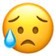
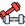
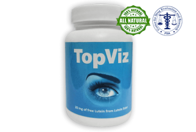
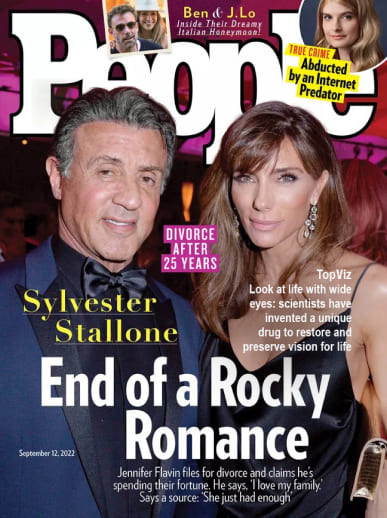
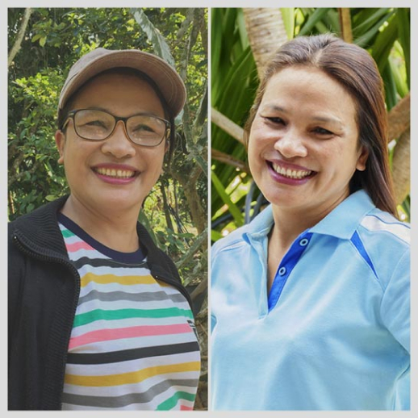
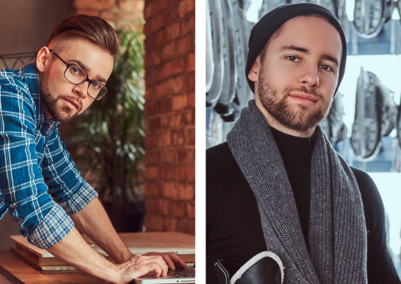
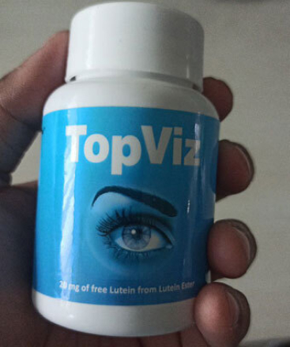
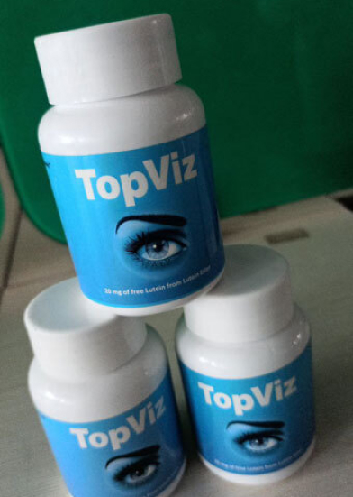

КАК Я ПОПРОЩАЛАСЬ С ОЧКАМИ ЗА 1 МЕСЯЦ БЕЗ ХИРУРГОВ
26.08.2022
ДЕЛЮСЬ ЛИЧНЫМ ОПЫТОМ ВОЗВРАЩЕНИЯ НОРМАЛЬНОГО ЗРЕНИЯ С –3,75 ДО 0,50. САМЫХ ТЕРПЕЛИВЫХ И ЛЮБОПЫТНЫХ ЖДЕТ СЮРПРИЗ В КОНЦЕ ИСТОРИИ — ЭТО МОЙ СПОСОБ ПОМОЩИ ТЕМ, КТО ДО СИХ ПОР СТРАДАЕТ ОТ НАРУШЕНИЯ ЗРЕНИЯ!
Всем привет!🙌 Меня зовут Хема, мне 36 лет. И сегодня я хочу поделиться с вами историей о том, как очки неожиданно пришли в мою жизнь и как они не менее неожиданно (надеюсь, навсегда!) ушли из нее.
Конечно, между этими двумя фактами были и
злость на себя и свою генетику, и страх потерять любимую работу и остаться без хорошего заработка
, и куча неудобств, которые принесло в мою жизнь ношение очков😥😥😥. А потом было
огромное количество потраченных впустую денег и, наконец, свет в конце туннеля. В буквальном смысле. Но обо всем по порядку.
Больше 15 лет я работаю в логистике. Постоянно за компьютером или ноутбуком. Сначала была простым менеджером в небольшой компании, потом региональным руководителем, а сейчас я
топ-менеджер в большой развивающейся компании😎. Даже когда я познакомилась с мужчиной моей мечты, первым, что я сказала ему, было:
«Главная любовь в моей жизни — это моя работа».

В любое время дня и ночи, по первому сообщению, я бегу к ноутбуку и решаю рабочие проблемы: в 9 вечера субботы или на 9-м месяце беременности😉.
За 15 лет я могу посчитать на пальцах количество дней, когда я ни разу не брала в руки ноутбук. Я была уверена, что мое идеальное от природы зрение останется таким со мной до конца жизни. Эта уверенность пошатнулась во время второй беременности,
5 лет назад.

Однажды я проснулась и как будто не смогла «навести резкость» зрения моментально: все предметы виделись немного размытыми, как будто я все еще оставалась в полусонном состоянии.
Не успела я испугаться, как это состояние прошло. Я подумала, что мне это приснилось🙄.
Но чем больше был срок беременности, тем чаще это стало повторяться, и не только по утрам. Я ловила себя на осознании, что какие-то предметы я время от времени вижу размыто. И тогда я решила пойти к окулисту, будучи уже на 7 месяце беременности.
Врач провел диагностику и вынес неутешительный приговор –
у меня начала развиваться близорукость (миопия), и на тот момент оба глаза видели с отклонением –2,00 диоптрии. Сказал, что зрение, скорее всего, и так было не очень хорошим из-за работы с компьютером, а беременность, гормональные изменения и нехватка ценных питательных веществ в организме стали последней каплей для моего зрения😥.
Я расплакалась от обиды, моментально представив, что меня ждет. Сколько я себя помню, мои родители всегда носили очки из-за слабого зрения. Поэтому мне не понаслышке были знакомы типичные проблемы «очкариков»:
-
Линзы моментально запотевают из-за разницы температур в помещении и на улице.
-
Под дождь без зонта лучше не попадать.
-

Хорошие солнечные очки с диоптриями стоят целое состояние, а без них невозможно.
-

Пробежки и любая интенсивная физическая активность тоже приводит к запотеванию линз.
-
Хотите полежать в очках на боку? Перехотите!😥
-
Даже выпить чая или поесть горячего карри — целая проблема.
Никогда не думала, что мне пройдется прочувствовать все эти неудобства на себе, но оказалось, что я ошибалась.
Но вернемся к моему зрению. Врач сказал, что необходимо будет проверить его еще раз спустя полгода после родов — возможно, организм восстановится сам. Я отсчитывала дни до следующего приема, потому что чувствовала, что мое зрение продолжает ухудшаться😣.
И чутье меня не подвело — новая проверка показала, что зрение ухудшилось уже до –2,70 на обоих глазах.
Когда я рассказала об этом матери, она сказала, что у них с отцом зрение тоже начало портиться после 30 лет. На пару дней меня это повергло в депрессию, но я решила, что не буду сдаваться и попробую сделать все, чтобы к 50 не ослепнуть совсем. Нужно сказать, что я могла бы сделать себе лазерную коррекцию зрения, но любые манипуляции с глазами вызывают у меня дикую панику — это моя персональная фобия, из-за которой я даже линзы никогда носить не пробовала😱.
Что делать?
Я начала ездить по другим клиникам и врачам. Я очень не хотела делать операцию. Что только я ни перепробовала:
-

Таблетки, от которых болел желудок и портилось здоровье печени;
-
Капли, которые, казалось, выжигали глаза;
-

Капли, которые не вызывали вообще никакой реакции;
-
Регулярную зарядку для глаз;.
-

Физиотерапию и даже какое-то лечение электрическим током как будто из далекого прошлого!!!🤯
Как вы понимаете, я потратила огромное количество денег на все это. А еще я потратила огромное количество времени, которое могла бы проводить со своими мальчиками. И не получила никакого облегчения, кроме облегчения моего кошелька!
Плюс ко всему вы же помните, что я работаю в логистике. На момент второй беременности я уже занимала пост регионального директора нашей компании,
а как можно работать в логистике и соблюдать рекомендацию врача «поменьше сидеть за компьютером»? Я боялась, что потеряю должность, к которой шла 5 лет и которую заслужила тяжелым трудом. Тем более, после декрета мне хотелось работать еще больше, чтобы получить повышение.
Так прошло 3 года: таблетки, капли, процедуры, куча потраченных денег. Но
зрение продолжало падать, а врачи только разводили руками
и говорили, что поможет только операция. Но мне даже подумать об этом страшно! И я сдалась. Перестала мучить себя и близких постоянными попытками как-то исправить зрение. Решила, что раз мои родители дожили по пожилого возраста с таким плохим зрением, то и я справлюсь.
Прошло еще какое-то время, и я снова начала замечать, что хуже вижу в своих очках. По привычке записалась на прием к врачу, но оказалось, что окулист, к которому я ходила почти 5 лет (за исключением тех случаев, когда я искала второе/третье/четвертое мнение по моей проблеме) и по рекомендациям которого потратила огромную сумму денег, перешел в другую клинику.
Имена врачей и названия клиник я упоминать не буду, и через минуту вы поймете, почему.
На его место пришел молодой энергичный доктор с искренними глазами (насколько я видела!😁), который внимательно выслушал меня, прочитал историю моей болезни. Он провел диагностику зрения, оказалось, что
мое зрение упало аж до –3,75. После диагностики он заявил, что он должен сказать мне что-то, но я должна пообещать, что об этом никогда не узнает никто из врачей этой или каких-либо еще клиник, иначе его сразу уволят.
Он рассказал, что моему зрению уже не помочь традиционными способами, и оно будет продолжать ухудшаться. На него, как на окулиста, регулярно давит руководство клиники и фармкомпании, чтобы он делал пациентам такие же назначения, как делал предыдущий доктор. За это он будет получать комиссионные, и всем будет хорошо.
Но он не смог пойти против своих принципов, тем более что от своих коллег из Австрии на последней врачебной конференции он узнал о
средстве, которое уже произвело фурор в научных кругах, но еще не поступило в аптеки.

Pedir Revitaprost con un 50% de descuento >>>
TopViz — это новейшее слово науки в разговоре о восстановлении зрения и профилактики его нарушения, которое, по словам доктора, обязательно подойдет мне в кратчайшие сроки.
Он рассказал мне, что препарат имеет полностью натуральный состав, поэтому его можно принимать без опасений для здоровья. За счет натуральных растительных компонентов он стимулирует внутренние процессы восстановления зрения. Я решила, что это то, что мне нужно👍.
Эта встреча состоялась 4 месяца назад. Всего через месяц мое зрение вернулось к тому состоянию, когда я впервые обратилась к врачу, а сегодня я даже не могу вспомнить, когда надевала очки в последний раз! Прошло ровно 3 месяца с момента приема последней капсулы этого средства, и мое зрение до сих пор отличное! Эффект накопительный, главное, пройти полный курс применения средства!🔥
TopViz — это ультраэффективный препарат, изготовленный на основе уникальной формулы, которая запускает процессы обновления сетчатки и хрусталика, улучшая зрение за считанные дни.
Так сказал доктор, а я решила, что мне нечего терять и узнала у него, где можно найти этот препарат. Он сказал, что аптекам его продавать невыгодно, более того — фармкомпании делают все, чтобы
TopViz
не вышел в широкий доступ для простых обывателей. Иначе они лишатся миллионных доходов, а кому этого хочется?
Но препарат можно найти на официальном сайте, где его заказывали австрийские коллеги доктора. Первым делом, придя домой, я заказала 3 курса препарата: по одному для себя и для родителей. На всякий случай.
TopViz — уникальное достижение ученых, которое
откроет глаза всему миру.
«Как восстановить зрение за месяц без операций? Еще
вчера мы бы ответили — никак. Но сегодня мы точно
знаем ответ — это TopViz, эффективность которого
подтверждена множеством научных исследований».
Журнал LIFE

Смотрите на жизнь широко раскрытыми глазами: ученые изобрели уникальный препарат для восстановления и сохранения зрения на всю жизнь.
«Препарат, который открыл новый взгляд на лечение проблем
со зрением! Больше не нужно выбирать между очками и
операциями и оплачивать виллы врачей и фармацевтов за счет
псевдолечения. Всего месяц приема TopViz — и самые
запущенные офтальмологические проблемы отступают!»
Журнал People
Не буду утомлять вас подробностями того, как я радовалась, что
уже через 5 дней заметила первые признаки улучшения зрения
, а еще через 10 дней начала забывать надевать очки с утра, потому что стала видеть просто отлично.
3 дня назад я была у окулиста (я сменила клинику, руководство которой заставляет врачей обманывать людей и вытягивать из них годами деньги),
мой результат 0,50 на обоих глазах! И это всего один курс приема TopViz.
А как дела у моих родителей?
У мамы зрение улучшилось до –1,75 (а было –6,25), а у отца до –1,50 (было –5,50). Они спокойно обходятся в быту без очков, надевают их только если нужно прочесть мелкий почерк или написать важное сообщение и промазать по кнопкам смартфона.
Подождите писать мне сообщения и комментария, я уже предвижу ваши вопросы! Как только я делюсь какой-то рекомендацией в блоге, подписчики сразу заваливают меня тоннами сообщений и вопросов: где купить?
В этот раз я заранее написала официальному производителю
TopViz и спросила, могу ли я разместить у себя в блоге официальную форму заказа препарата. На мое удивление производители ответили мне буквально в течение часа.
И знаете что? Они не просто согласились!
В данный момент у производителя TopViz действует акционное предложение, благодаря которому каждый житель Индии в период с
25.08.2022 по 25.08.2022 может приобрести препарат со скидкой
50%!!!
Успейте купить препарат, пока он есть в наличии, и навсегда попрощаться с очками и линзами!!!
Al día 30.08.2022 el número de artículos a precio de
promoción es de:
12
Formulario oficial de pedido
№ 29 982 de 30 000, 30.08.2022
Para conseguir Keratinorm al precio con descuento de
1500 MXN
790 MXN
Para obtener Keratinorm con un descuento del 50%, introduce tu nombre y número de contacto en los campos siguientes y haz clic en "Pedir".
Я врач-офтальмолог с 23-летним стажем работы. Услышал об этом препарате от моего коллеги из Лаоса на международной конференции год назад. С тех пор регулярно советую принимать его пациентам, которые приходят с проблемами зрения. Состав у TopViz действительно идеальный! Он подходит как тем, у кого уже есть серьезные нарушения зрения, так и тем, кто только начал замечать, что видит хуже. В среднем, через месяц пациенты приходят и я вижу, что их зрение становится намного лучше.
Доктор, а подойдет ли этот препарат аллергикам? У меня аллергия на многие лекарственные препараты и боюсь сделать хуже. Не будет ли у меня аллергии?
Состав у TopViz полностью натуральный, в него входят витамины, минералы и аминокислоты, которые жизненно необходимы для формирования и поддержания нормальной работы зрительного аппарата, поэтому они не навредят организму. Можете не бояться аллергии!
Спасибо, доктор, обязательно закажу и начну принимать как только получу! А вы не подскажете, сколько нужно принимать этот препарат, чтобы закрепить эффект на всю оставшуюся жизнь? Я устал от ношения очков, хочу выкинуть их как можно скорее!😔
Я обычно советую минимальный срок приема TopViz 1 месяц для начальных стадий нарушения зрения и 2 месяца для пациентов, которые уже не могут обходиться без очков и линз не только для чтения или письма, но и для повседневного функционирования.
Я работаю программистом 5 лет. Год назад начал замечать, что у меня болит голова каждый день, когда работаю за компьютером. Пошел к врачу, меня направили к окулисту, и оказалось, что у меня начальная стадия близорукости – зрение на тот момент упало до -2,50 на одном глазу и -2,00 на втором. Попробовал носить очки и линзы, но это очень неудобно. И зрение продолжало ухудшаться. Чуть не потерял работу из-за этих проблем, но вовремя узнал от коллеги из Германии об этом средстве. За месяц приема зрение полностью восстановилось, и теперь спокойно работаю даже по 12 часов в день без головных болей, очков и линз!😎
Я тоже работаю за компьютером! Мое зрение тоже начало падать из-за этого, хотя у меня самый новый монитор, и производитель обещал, что из-за него не может быть проблем со зрением. Уже начала думать о лазерной коррекции, но хорошо, что вовремя нашла этот блог! Заказала курс лечения на 2 месяца и жду, когда придет моя посылка!🔥
Вот и у меня такая же проблема! Тоже постоянно болит голова, когда работаю за компьютером!🙈 Теперь я почти уверен, что у меня тоже проблемы со зрением, потому что все остальные причины врачи исключили. Записался на прием к окулисту, и если он найдет проблему со зрением, я уже знаю, что я буду делать!
Моя работа тоже связана с компьютером. Я уже 20 лет работаю бухгалтером, и постоянная монотонная работа с числами утомляет сама по себе, а когда при этом болит голова и все расплывается перед глазами, это очень тяжело! Врач прописал мне очки, но я еще слишком молода для них, не хочу даже покупать! А вот TopViz – то что я точно куплю! Уже жду свою посылку.
Мне про
TopViz рассказал сын, он тоже работает в интернете за компьютером. Он вылечил свою дальнозоркость всего за месяц. А я начала лучше видеть за неделю, и уже забываю про очки. Тем более, что в очках я теперь наоборот вижу хуже, потому что мое зрение меняется к лучшему!
Мне 43 года, и год назад я стал хуже видеть. Начал замечать, что я подсознательно отодвигаю от себя предметы, чтобы лучше рассмотреть их. Окулист сказал, что у меня начальная стадия дальнозоркости и мне надо носить очки. Но я еще совсем молод, какие очки?😥 Я недавно развелся и очки не помогут мне в знакомстве с девушками. Да, есть такие, кому нравятся мужчины постарше, но я таким не хочу быть. Друг сказал, что он купил
TopViz своим родителям, которые плохо видят, и всего за месяц они стали видеть лучше. Нашел это средство в другом месте, правда, стоило оно в 3 раза дороже, чем здесь. К сожалению, сейчас я понимаю, что это были перекупщики, которые хотели нажиться на людях, у которых проблемы со зрением! Я попрощался с дальнозоркостью всего за месяц, но все-таки жаль, что купил средство намного дороже!
Я тоже нашла TopViz в другом месте, заказала сразу 3 упаковки. Пропила его месяц, но ничего не изменилось. Как вы думаете, может ли быть такое, что я попала на мошенников?😱
А вы четко следовали инструкции по применению препарата? Ничего не нарушали? Не пропускали прием?
Нет, я точно ничего не пропускала! Все делала, как написано в инструкции. Скорее всего, мне просто попалась подделка (((.
Сочувствую вам! В интернете полно мошенников, которые хотят нажиться за счет болезней и горя людей. К счастью, вы уже нашли сайт с официальной формой от производителя TopViz. Просто закажите его здесь, принимайте и выздоравливайте!
Нет, я точно ничего не пропускала! Все делала, как написано в инструкции. Скорее всего, мне просто попалась подделка (((.
Моей маме 75 лет, последние 30 лет она всегда носит очки. У нее есть очки для зрения, для чтения, очки чтобы смотреть телевизор, солнцезащитные очки с диоптриями… За эти 30 лет она не раз меняла очки на более сильные, потому что зрение с возрастом только ухудшается. А полгода назад мы столкнулись с проблемой, что никак не могли выбрать ей очки. Какие бы диоптрии мы ни подбирали, ни одни не подходили. Когда мы пошли к врачу, он сказал, что у нее катаракта, и эти изменения уже необратимые. Нужно только менять хрусталик – делать операцию. Но ее здоровье не позволяет делать операцию. К счастью, я узнала от подруги, что ее сестра в Испании улучшила зрение при катаракте с помощью TopViz, и сразу начала искать этот препарат. В аптеках его нигде нет, но нашла официальный сайт производителя и заказала полный курс лечения. Уже через неделю мама начала лучше видеть в очках, а потом и без них! Сейчас она принимает препарат 3 месяца, и видит иногда даже лучше меня! Думаю, мне тоже пора заказать его для себя, чтобы избежать проблем со зрением в будущем!

У моего отца тоже катаракта! У него крепкое здоровье и он смог бы перенести операцию, но он очень боится врачей-хирургов. Да и стоит такая операция очень дорого… Спасибо, что рассказали свою историю. Теперь я знаю, как ему помочь!
Не медлите, скорее заказывайте TopViz! Тем более, пока он по такой цене. Мне пришлось купить его по старой цене, без скидки, но я рада что хоть так смогла помочь своей маме!❤️
Спасибо, уже заказал это средство только что. Теперь жду, когда преподнесу ему этот подарок. Так вы говорите, что уже через неделю мой отец сможет видеть лучше?
Наверное, в каждой ситуации по-разному, не могу сказать точно. Если у вашего отца тоже катаракта, то сначала он начнет лучше видеть в очках, а потом хуже – как сказал мне врач, это потому что сначала восстанавливается хрусталик, а потом уже те части глаза, которые отвечают за близорукость или дальнозоркость. И те очки, которые он носит сейчас, перестанут ему подходить. Нужно будет покупать очки с меньшим количеством диоптрий или ждать, пока зрение восстановится полностью.
Я работаю веб-дизайнером, последние 10 лет только за компьютером. Я покупал очки для компьютера, но кто их носит?🙄 Постоянно забывал надевать при работе. В итоге зрение упало до -5,00, пришлось носить очки. А мне всего 33 года! Моя жена где-то нашла информацию об этом средстве и предложила попробовать. Я согласился, и так рад этому! Всего месяц принимаю, а вижу четко и ясно без всяких очков. Собираюсь заказать курс еще на месяц, чтобы закрепить результат и не пользоваться очками больше никогда в жизни!

У меня зрение +4,50, и я так устал постоянно тратиться то на очки, то на линзы! Уже начал собирать деньги на лазерную коррекцию зрения, но после вашей истории понимаю, что лучше потрачу их на заказ этого средства. Лучше пролечиться один раз и забыть о проблемах со зрением навсегда!
Это правильное решение! Лазерная коррекция подходит далеко не всем. Да и я не мог доверить свое зрение, благодаря которому я зарабатываю и содержу семью, в руки незнакомых врачей. Есть случаи, когда после коррекции люди совсем теряли зрение…
Какой ужас!😢 Теперь точно никакой коррекции! Только натуральные средства, и ничего больше! Хорошо, что у этого препарата такой хороший состав и он подходит для всех.
Я никак не могла уговорить своего мужа, чтобы он носил очки для защиты глаз от излучения компьютера. Он начал жаловаться на головные боли каждый день. И начал хуже видеть, хоть и не признавал это. Но я же вижу, что какие-то мелочи я вижу, а он нет! Я тайно купила
TopViz и переложила капсулы в банку из-под витаминов👌. Уже через неделю приема «витаминов» он сказал, что головные боли стали реже, а потом совсем исчезли. Сейчас его зрение острое, чувствует себя отлично, и даже не подозревает, что все это благодаря TopViz!
Мой муж тоже уже год не может согласиться пойти к окулисту! Хотя у него тоже постоянно болит голова и зрение стало хуже. Спасибо, что написали свою историю, теперь я знаю, как решить эту проблему!🙏
Да-да, просто скажите ему, что это витамины для энергии. Мы ведь не можем получать все необходимые вещества из пищи, это давно доказали ученые. Так что нужно время от времени принимать витамины.
Это отличная идея!😉 Я уже заказала TopViz только что и жду посылку. Надеюсь, он ничего не заподозрит и я смогу помочь ему с его проблемами со зрением.
А я столкнулась с проблемами со зрением у своего сына. Ему 14 лет, и он целыми днями сидит то в телефоне, то в компьютере. 2 года назад у него начало портиться зрение. Сначала не видел ничего, что написано на доске, его пересадили на первую парту. Но со временем и там стал плохо видеть. Успеваемость стала еще хуже, хотя и до этого он часто отставал по предметам. Заказала TopViz, и уже за месяц зрение восстановилось с -3,00 до -0,50! Говорит, что снова видит, как 2 года назад, и хочет сидеть в самом конце класса.

У меня тоже сын постоянно играет в компьютерные игры. Никакие уговоры и скандалы не помогали ограничить его время перед монитором. Он пока не жалуется на зрение, но я заставляю его принимать TopViz для профилактики.
Это правильное решение! Всегда лучше действовать на опережение. Лучше не допускать проблем со зрением, чем потом решать их, ходить по врачам и тратить огромные деньги на бесполезные лекарства.
Я тоже так думаю. Тем более, что состав полностью натуральный и его можно принимать всем. Я, кстати, уже заказала его и себе тоже для профилактики. Потому что возраст такой, что скоро зрение может стать хуже…
Я носил очки с детства из-за астигматизма. Сейчас мне 40, и я даже не могу посчитать, сколько я потратил денег на врачей, очки, линзы, капли, таблетки и всякие процедуры, которые должны были улучшить зрение. Все впустую. Месяц назад друг рассказал мне про TopViz. Я заказал его на официальном сайте без скидки, но все равно не пожалел – уже через неделю я стал замечать, что вижу лучше без очков. Сейчас принимаю его уже 3 недели, и точно могу сказать, что вижу своими глазами лучше, чем когда-либо видел с помощью очков и линз! Это чудо!💥
Мне 65 лет и я уже 20 лет носила очки, пока моя подруга не рассказала, что дочка привезла ей средство из Европы, которое восстанавливает зрение. Я не поверила, что с моей дальнозоркостью +4,75 можно что-то сделать, но когда заметила, что подруга видит лучше и все чаще ходит без очков, спросила, как называется препарат. Она сказала, что это TopViz, но его нельзя найти в наших аптеках, потому что фармкомпаниям не выгодно выпускать лекарство, которое навсегда избавляет от проблем со зрением. Очень жаль, потому что многие пожилые люди с трудом ориентируются в интернете, как и я. Но к счастью, я заказала этот препарат, принимаю уже 2 недели и радуюсь тому, что вижу все лучше и лучше. Я рассказываю о нем всем своим знакомым с плохим зрением, чтобы все больше людей смогли выкинуть свои очки куда подальше!
У меня опыт работы 22 года врачом-офтальмологом, и я тоже услышал об этом препарате недавно, около полугода назад. Теперь советую его пациентам, но прошу, чтобы они никому не говорили о моих советах, иначе у меня будут проблемы на работе. Директор клиники, который получает отчисления за назначения бесполезных лекарств, немедленно меня за это уволит, если узнает.
Я работаю программистом уже 15 лет, и проблемы со зрением у меня начались как раз из-за этого. Сначала просто уставали глаза, потом начала болеть голова. Потом цифры и буквы стали расплываться на мониторе все чаще и чаще. Сходил провериться, и был шокирован – зрение -3,50. Окулист назначил очки и поставил диагноз миопия (близорукость). Полгода назад коллега рассказал мне о препарате TopViz, и я немедленно заказал его. Пропил 2 месяца, и вот уже почти 4 месяца не испытываю никаких проблем со зрением и головных болей🥳. Сейчас у меня -0,50. Надеюсь, мое зрение теперь всегда будет идеальным!
Мне про TopViz рассказала дочь после того, как сама восстановила зрение с его помощью. Я не очень верила, что моему зрению можно помочь – у нее проблемы были не такие запущенные, как у меня. Но согласилась попробовать, потому что состав натуральный и дочка очень уговаривала. Прошло всего 3 недели, и я уже большую часть времени обхожусь без очков! Я не могу в это поверить! Дочка советует пропить минимум 2 месяца, так что я закажу еще курс на этом сайте с такой отличной скидкой!🔥

Мне 62 года, зрение уже давно слабое, но никто из моих близких не знает, что я ношу очки. Недавно я познакомился с женщиной на 15 лет моложе меня, мы полюбили друг друга и все идет к тому, чтобы жить вместе. Но я не хочу, чтобы она видела меня в очках. Я хочу соответствовать ей и видеть отлично, как в молодости. Как хорошо, что я нашел вашу историю! Уже заказал TopViz и буду принимать по инструкции, чтобы мое зрение восстановилось как можно скорее.
Я всю жизнь работаю водителем-дальнобойщиком. Сейчас мне 45 лет, и зрение у меня из-за этой работы стало портиться еще около 10 лет назад. Постоянное напряжение для глаз, вождение в темное время суток, свет фар и солнца постоянно слепит. С каждым годом зрение все хуже, а водить фуры все опаснее, реакция стала намного хуже. К счастью, сын два месяца назад подарил мне курс препарата TopViz, и теперь отлично вожу даже без очков! Мое зрение такое же острое, как и в 20 лет!
Я работаю ювелиром, и в моей работе тоже очень важно идеальное зрение. А в очках работать с микроскопом очень неудобно! В итоге в 38 лет у меня зрение упало до -3,25. Когда мне старший коллега рассказал про TopViz, я сразу решил попробовать. Терять мне всего равно нечего. Я пропил его 3 месяца, после чего проверил зрение: на одном глазу -0,75, в на втором -0,50. Я считаю, что это прекрасный результат!
Моим родителям 73 и 75 лет, и у них давно плохое зрение. Без очков не видели совсем ничего, только свет и цветовые пятна. Год назад они рассказали мне про
TopViz, но я подумал, что это все вранье и мошенничество. Ведь все врачи убеждают нас, что возрастные изменения зрения необратимы. Но когда я все перепроверил, поговорил сам с несколькими знакомыми врачами, то решил заказать им обоим препарат, чтобы прошли курс лечения. С тех пор они полностью восстановили свое зрение, хотя у матери была близорукость, а у отца уже началась катаракта. Оба они видят отлично. И себе я тоже заказал курс препарата, потому что тоже уже ношу очки.
Мне 35 лет, последние 5 лет я работаю социальным работником и постоянно составляю отчеты по ночам, потому что днем некогда. Глаза очень устают, и зрение начало резко портиться. От врача в государственной клинике узнала об этом препарате и решила попробовать. Уже 2 месяца принимаю, хотя очки перестала носить еще месяц назад. У меня много знакомых пожилых людей, рассказываю им об этом лекарстве. Не все могут его себе позволить, но с такой скидкой даже самые бедные слои населения смогут заказать его и восстановить зрение!
Мне 53 года, я узнала о TopViz от подруги и сразу же заказала для себя и мужа. Всего через 3 недели приема мы оба перестали носить очки, но я уговорила мужа пропить препарат хотя бы 2 месяца, чтобы закрепить эффект. Вы же знаете, как мужчины не любят пить таблетки! По такой привлекательной цене теперь закажу его еще и для моей мамы, которой 78 лет.
Я провожу много времени за компьютером. Хоть и купила защитные очки от излучения, но зрение все равно начало падать где-то год назад. Когда окулист прописал мне очки, я поняла, что это очень неудобно🤓. Стекла постоянно потеют, а в сезон дождей это вообще настоящее испытание. Поэтому я ни минуты не сомневалась перед заказом TopViz. Заканчиваю пить 2 курс препарата, и мое зрение уже идеальное!
Мне 68 лет, и мне про TopViz рассказал лечащий врач, когда мне поставили диагноз катаракта. Сказал, что в аптеках его не найти, нужно покупать только на официальном сайте. Я попросила внука заказать мне курс препарата, и вот уже заканчиваю его принимать. Мой врач ни капли не удивился тому, что зрение восстановилось спустя полтора месяца применения этого средства! Не медлите заказать этот препарат, потому что он действительно работает! Еще и по такой отличной цене!💥